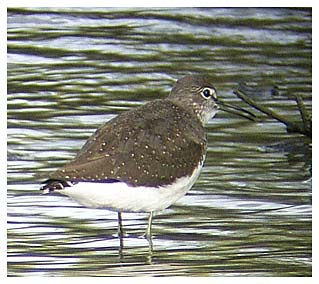

Green Sandpiper
A regular passage visitor to the reservoir that occurs
mostly in the second half of the year from July to November. |
|
01/09/58 - 2 birds. 14/07/59 - Single bird. 1964 - Single bird reported. 15/08/66 - 1 or 2 birds seen. Also seen on 25/08 & 01/09. 1968 - Single bird seen in the Autumn period. 31/08/74 - Single bird. 08/09/88 - Single bird, heard & seen in flight but was not seen to land. 18/04/90 - Single bird. 23/09/90 - Single bird. 02/08/91 - Single bird. 05/10/95 - 2 birds. (DL). 26/11/96 - Single bird. (DWH). 25/12/96 - Single bird. (DWH). 05/01/97 - 2 birds, seen on stream below the dam. (HCS). 02/11/97 - 2 birds. (HCS). 3 birds seen on 08/11. (DWH) & (AJB). 07/09/98 - Single bird, remained until 09/09. 26/11/98 - 2 birds. (DL). 10/08/99 - Single bird, heard only. (BS). 25/09/99 - Single bird. (AJB). 23/09/00 - 2 birds with a single on 26/09 20/08/01 - Single bird 27/08/01 - Single bird stayed 2 days 05/10/01 - Single bird also seen on 06/10 and 09/10 02/11/01 - Single bird 30/07/02 - 4 birds |
 Green Sandpiper - Bob Hastie |
11/09/02 - 3 birds for 2 days then one remained through the month with 2 on 22/09. 01/10/02 - Single until 19/10 with 3 birds on 5/10 03/11/02 - Single and also on 05/11 25/12/02 - Single bird 04/08/03 - Single with one or 2 birds all month and peaks of 3 on 07/08 and 4 on 14/08 07/09/03 - Singles seen through the month. 02/10/03 - Single bird. 04/11/03 - Single bird also on 06/11. 26/07/04 - 2 birds with 3 on 28/07 and at least 1 or 2 to the end of August with peak of 4 on 14/08 18/07/05 - 2 birds 06/08/05 - Single bird also on 08/08 and 25/08. 12/09/05 - Single to end of month with 3 on 22/09 and 23/09 05/10/05 - 1 or 2 all month with peak of 3 on 11/10. 01/11/05 - Single bird also on 25/11 and 29/11. 13/12/05 - Singles on many dates up to 21/12 07/01/06 - Single bird. 18/07/06 - 2 birds then 1-3 throughout the next four months until last single of the year on 16/11/06 11/08/07 - Single bird then 1 or 2 through to mid November 2008 - Ones or twos recorded on 23 dates from 26/07 to end of year 2009 - Up to 3 on 20 dates from 28/06 to 12/11 2010 - Up to 3 on 26 dates in second half of year 2011 - Mostly 1 sometimes 2 on 43 dates throughout the year 2012 - Mostly 1 or 2 on 18 dates with a record breaking 9 (so far, but see next year) on 11/08 2013 - Recorded on 45 dates with exceptional counts all through August peaking at 15 on 15/08 2014 - Recorded on 25 dates mostly Aug-Sep with numbers peaking to 6 on 29/08-31/08 2015 - Recorded on 60 dates with maximum 6 on 6 dates in July 2016 - Recorded on 25 dates with maximum 2 in August and September 2017 - Recorded on 14 dates, mostly singles with 4 on 26/08 and 28/08 2018 - Recorded on just 11 dates, mostly singles with 2 on 28/08 and 2 on 07/09 2019 - Recorded on just 9 dates, most in September. all singles. This is the lowest count since 2001. Prior to that date they were less common at the res with only 1 or 2 records a year 2020 - Recorded on just 7 dates, most in August, all singles. Water level was high this year and poor generally for waders 2021 - Recorded on just 6 dates in August and September, all singles 2022 - Recorded on 23 dates with max of 5 on 11/08. 2 birds stayed for a week from 19/08 to 25/08 2023 - Recorded on 13 dates all in August apart from one heard on 24/11. Max 4 on 21/08 2024 - Recorded on 12 dates, most in August, but also some in July and September, only ones or twos 2025 - Recorded on just 7 dates most in July and August, maximum 2 birds
|
|